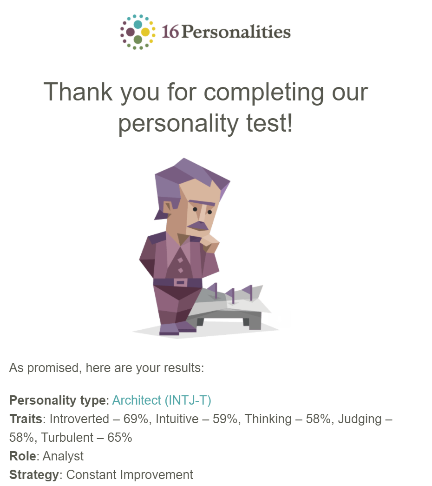
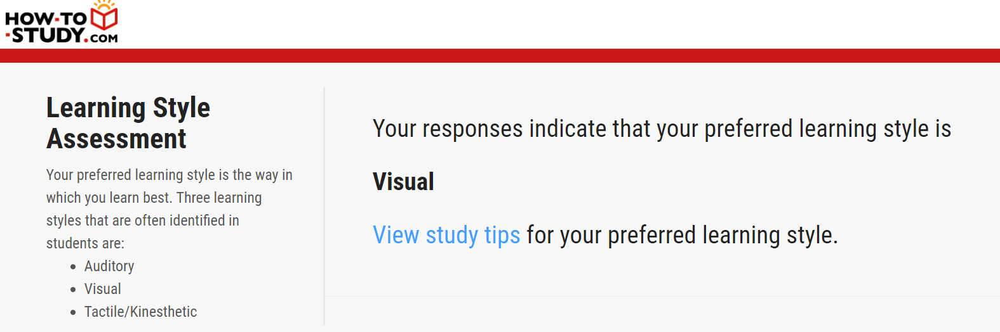
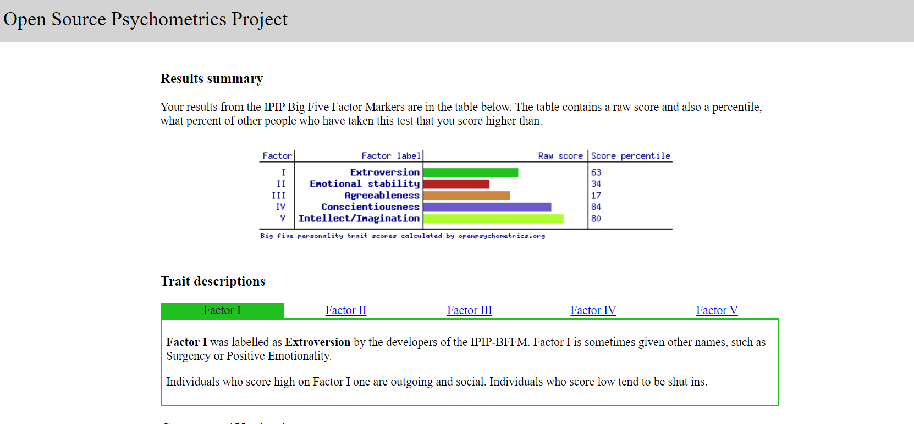

The results of these personality tests are good for some minor self-reflection, lots of the results match up with day to day situations that I experience. I am a little bit sceptical of personality tests but after taking the Myers-Briggs test and receiving the result via email I noticed that I had taken it three years prior and received the exact same personality type, so they are at least consistent. The tests reflect my mild introversion which I do have actively counter in team environments, they also indicate that I prefer a visual, hands on, and strategic approach to problem solving.